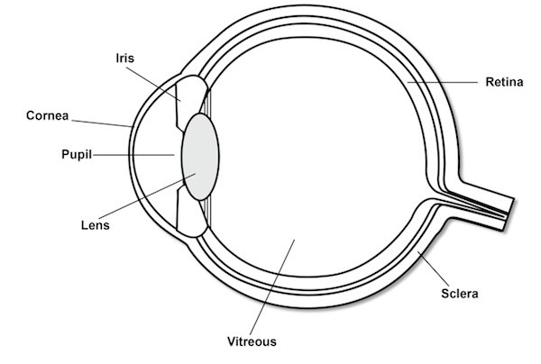
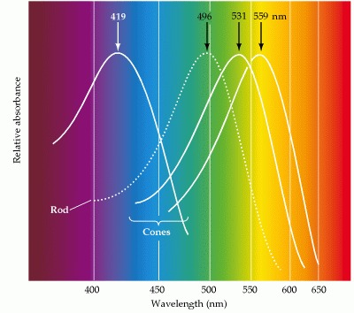
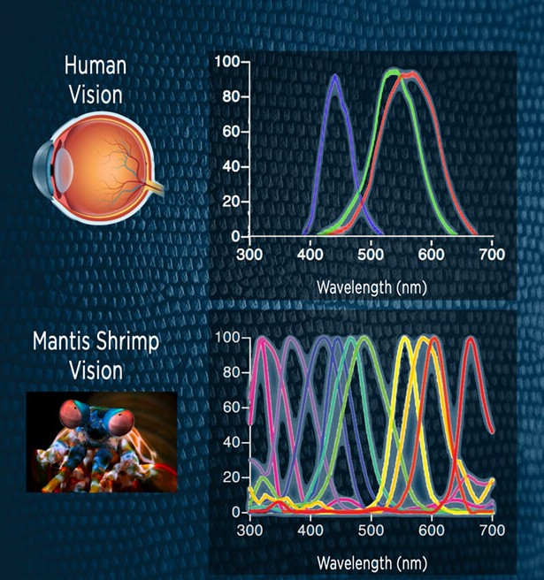

ලෝකය හැමෝටම එක සමානද?
කලින් ලිපි දෙකේදිම මම කතා කරේ කොහොමද වස්තුවකට වර්ණයක් හම්බෙන්නෙ කියලා. එහෙනම් අද බලමු සරලව කොහොමද අපේ ඇහැ වර්ණ අඳුනගන්නෙ කියලා. ඒ වගේම එකම වස්තුව එකම වර්ණ වලින්ද හැමෝටම පේන්නෙ කියලා බලමු.
0.1 ඇස නමැති කැමරාව 📷

අපේ ඇහැ කියන්නෙ සරල කැමරාවක් කියලා හිතමු. මේ කැමරාවෙ තියෙනවා විවරයක් (Aperture). අපි මේකට කියනවා කනීනිකාව කියලා. මෙයා තමයි අපේ ඇහැට එන ආලෝක ප්රමාණය පාලනය කරන්නෙ. ඊලඟට තියෙනවා කාචයක්. මේ කාචයට පුලුවන් තමන්ගෙ වක්රතාවය වෙනස් කරලා නාභීය දුර වෙනස් කරන්න. ඊලඟට තියෙනව දෘෂ්ටි පටලය (retina). මේක හරියට පොඩි සංවේදක තිරයක් කියලා කියමුකො.
(ඇස මීට වඩා බොහොම සංකීර්ණ අවයවයක්. මං මේ සරලම ආකෘතිය තමා ලියලා තියෙන්නෙ.)
අපි මොකක් හරි වස්තුවක් දිහා බලනකොට ඒ වස්තුවෙ ප්රතිබිම්බයක් මේ retina එක මත කාචය මගින් ඇති කරනවා. දැන් මේ ඇති කරන ප්රතිබිම්බය සංවේදනය කරගන්න මේ retina එක මත තියෙනවා ජාති දෙකක සංවේදක. අපි මේවට කියනවා යෂ්ටි සහ කේතු සෛල කියලා (rods & cones). මේවා ඇවිල්ලා photoreceptor cells. ඒ කියන්නෙ මේ ඇවිල්ලා ආලෝකයට සංවේදී සෛල. යෂ්ටි සෛල වලින් වර්ණ ග්රහණය කරගන්නෙ නැහැ. ඒ වගේම මේවා සංවේදි ඉතා අඩු ආලෝක තත්ව වලට.
0.2 කේතු සෛල සහ වර්ණ සංවේදනය
අද අපේ කථානායකයා වෙන්නෙ කේතු සෛල නැත්නම් cone receptors. මිනිස් ඇස තුල මෙයාලගෙ වර්ග තුනක receptors තියෙනවා L,M,S කියලා (Long-wavelenght, Medium-wavelenght, short-wavelengt). මේ තුන්දෙනා සංවේදනය කරන්නෙ දෘෂ්ය වර්ණාවලියෙ පරාස තුනකින් එන ආලෝකය. සරලවම මේ තුන අඳුනගන්නෙ රතු, කොළ සහ නිල් වර්ණ පරාස. තනි වර්ණයක් නෙවෙයි පරාසයක්. පහල තියෙන රූපයෙන් පේන්නෙ මේ සංවේදක තුනේ response bands.

අපිට පේනවා මේ bands තුන වෙන වෙනම නෙවෙයි තියෙන්නෙ. එක මත එක පිහිටනවා. එහෙම නැත්නම් overlap වෙනවා. ඒ වගේම bands තුනේම responsivity එක wavelength එකත් එක්ක වෙනස් වෙනවා. Bands තුනට වෙන වෙනම highest responsivity එකක් දෙන peak wavelengths තියෙනවා. අපි මේ හින්දා සාමාන්යයෙන් කියන්නෙ මිනිසාට සාමාන්යයෙන් පේන්නෙ Red, Green, Blue bands කියලා.
මේ ඇවිල්ලා සංවේදන කලාප. Cone receptors වලට අඳුනගන්න බැහැ තමන්ට මේ ලැබෙන light signal එක මොන wavelength එකෙන්ද කියලා. ඒ වෙනුවට එයාට ලැබෙන්නෙ තමන්ගෙ response curve එකට් අදාලව Intensity value එකක්.
අපි සරල උදාහරණයක් ගමු. හිතන්න අපි බලනවා කහ පාට මලක් දිහා. එතකොට ඒකෙ ප්රතිබිම්බය මත එක ලක්ෂ්යයක intensity response එක ගැන හිතමු.
මල කහ පාටයි. ආසන්නව 580 nm වගේනෙ කහ පාට. L,M,S receptors තුනේ response බැලුවොතින්, L curve එකට මේ හරියෙ හොඳ reaponse value එකක් තියෙනවා, M වලටත් එහෙමයි. හැබැයි S receptors වල response එකක් නැහැ. දැං එතකොට L, M, S කියන තුනට ලැබුනු ආලෝකයට හරියන්න අගයන් තුනක් තියෙනවා.
මේ විදියට තමයි මේ cone receptors වැඩ කරන්නෙ. එයාලා ගන්නෙ ලැබෙන ආලෝකයට අදාලව තමන්ට ලැබෙන response එක.
මෙතනින් එහාට වැඩේ බාරගන්නෙ ganglion cells සහ LGN nurons. මෙයාලා තමයි L,M,S Cone receptors වලින් එන raw outputs mix කරලා ප්රධාන channel තුනක් විදියට signal එක process කරන්න ගන්නෙ. මෙතනින් එහාට වැඩේ තරමක් සංකීර්ණ කතාවක්.
හරි… සරලව අපේ ඇහේ තියෙන සංවේදක කරන්නෙ නිෂ්චිත වර්ණයක් අඳුනාගැනිම වෙනුවට ඒ වර්ණයට අදාලව තමන්ගෙ සංවේදන කලාප වල අගයන් ටිකක් සංවේදනය කරන එක.
0.3 එතකොට වෙනස් මිනිස්සු දෙන්නෙක් එකම වස්තුවක් දකින්නෙ එකම වර්ණ වලින්ද?
ආසන්න වශයෙන් ඔව්. හැබැයි 100% දකින වර්ණ හරියටම සමාන නැහැ කියලා බොහොමයක් පර්යෙෂණ පත්රිකා කියනවා. මොකද හැමෝගෙම cone receptor වල responsivity සර්වසම නැති හින්දා.
0.4 හැම සතෙක්ටම පේන වර්ණ එක සමානද?
නැහැ. සත්ව වර්ගයෙන් වර්ගයට මේ responsivity curvea වෙනස් වෙනවා. අපිට bands 3ක් detect වුනාට ගොඩක් ක්ෂීරපායින්ට තියෙන්නෙ වර්ග දෙකක cone receptors විතරයි (Dichromats). උදාහරණයකට බල්ලන්ට තියෙන්නෙ S & ML bands. එයාලට නිල් සහ UV එක band එකක් විදියටත් කොල- කහ එක band එකක් විදියටත් තමයි පිහිටලා තියෙන්නෙ.
කුරුල්ලන්ට bands 4ක response එකක් ලැබෙන්නෙ. ඒ වගේම එයාලගෙ ඇස් වල මේ color bands filter කරගන්න උවමනා අනුවර්තන වෙලා තියෙන්වා. ඉදුණු පලතුරු එහෙම හරියටම අඳුනගන්න පුලුවන් විදියට තමයි මේ band response curves පිහිටලා තියෙන්නෙ.
Colour bands ගැන කතාකරද්දි අමතක කරන්න බැරි සතෙක් තමයි Mantis shrimp. මෙයාගෙ ඇහැ තුල photoreceptors වර්ග 12-16 ප්රමාණයක් තියෙනවා වගේම මේ bands හරිම narrow. මෙයා ඉන්න පරිසර පද්ධති වල වෙන පුංචි පුංචි වෙනස්කම් අඳුනගන්න මේ හින්දා මෙයාට හැකි වෙලා තියෙනවා.

මේ වෙද්දි අපි පාවිච්චි කරන Multispectral Imaging, Hyperspectral Imaging වගේ තාක්ෂණයන් භාවිතා කරනවා අපේ පියවි ඇහැට බලාගන්න බැරි දේවල් සංවේදනය කරගන්න. හැබැයි ඒ සංකල්ප සොබාදහම විසින් මේ විදියට නිර්මාණය කරලා තියෙනවා හරි අපූරුවට අපිට බලාගන්න පුලුවන් මේවා එක්ක.
0.5 වැඩිදුර කියවීමට
Baden, T., & Osorio, D. (2019). Diverse cell types, circuits, and mechanisms for color vision in the vertebrate retina. Physiological Reviews, 99(4), 2135–2173. https://doi.org/10.1152/physrev.00045.2018
Emery, K. J., & Webster, M. A. (2019). Individual differences and their implications for color perception. Current Opinion in Behavioral Sciences, 30, 28–33. https://doi.org/10.1016/j.cobeha.2019.05.002
MacAdam, D. L. (1960). Theory on the receptor mechanism in color vision. Journal of the Optical Society of America, 50(10), 945–946. https://doi.org/10.1364/JOSA.50.000945
Thoen, H. H., How, M. J., Chiou, T. H., & Marshall, J. (2014). A different form of color vision in mantis shrimp. Science, 343(6169), 411–413. https://doi.org/10.1126/science.1245824